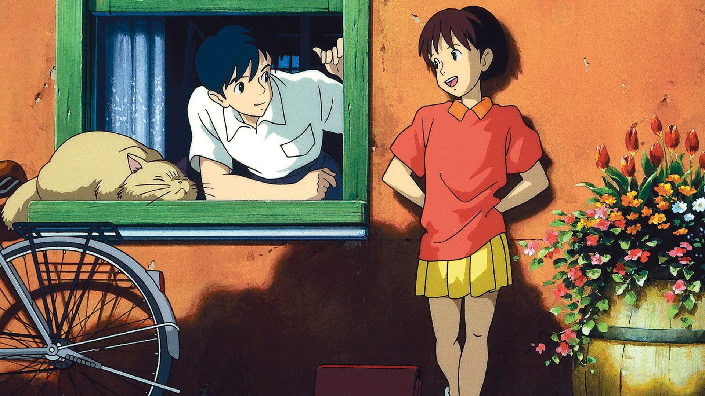

La Shizuku és una adolescent aficionada a la lectura, que ha planejat passar les seves vacances d'estiu llegint a la biblioteca i traduint cançons estrangeres. Però, per sorpresa seva, els seus plans fan un gir inesperat quan descobreix que les fitxes dels llibres que agafa de la biblioteca tenen un mateix nom: Seiji Amasawa.
Un dia, al tren, la Shizuku es troba amb un gat misteriós que la porta a la botiga on en Seiji treballa com a aprenent de lutier. En Seiji explica a la Shizuku que el seu somni és portar el seu art a Itàlia i anima la Shizuku perquè escrigui llibres.
| Direcció | Yoshifumi Kondō |
| Producció | Toshio Suzuki |
| Guió | Hayao Miyazaki |
| Música | Yuji Nomi |
| Fotografia | Kitaro Kosaka |
| Muntatge | Takeshi Seyama |
| Productora | Studio Ghibli |
Paula Muncunill Martinez